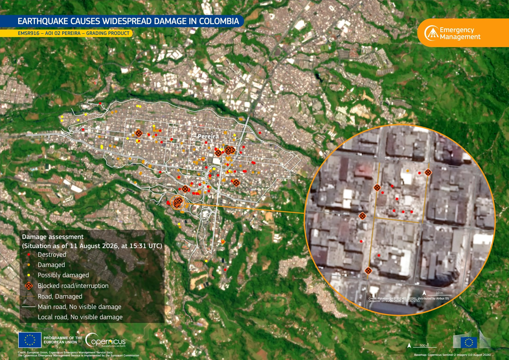

Insight · Natural Hazards
How the Colombia earthquake blocked the Pacific corridor

On 10 August 2026 a magnitude 7.4 earthquake struck western Colombia, in Chocó — the strongest shock in the country since 1979. Hundreds of people died. For operations, the territorial fact is blunter: the roads that feed the Coffee Axis and Buenaventura closed. Inland plants, exporters and terminals did not fail only because a wall fell. They failed because the corridor, the bridge and the port sat in the same shock.
Roads, kilometres and the points that matter
Authorities count roads and points. UNGRD’s September balance listed 521 affected roads and about 120 bridges — 107 vehicle and 13 pedestrian. Invías counted 113 points on the primary network. Those points are not a scatter. They sit on the corridors that already concentrate Pacific trade.
The Buga–Buenaventura corridor is about 120 kilometres of mountain road — the land approach to the Pacific port that handles around 40% of Colombia’s international trade. After 10 August it was not a route. Landslides closed stretches such as La Yolomba, a tunnel on the Cali side left 15 vehicles stranded, and night closures turned a working corridor into a controlled trickle.
The same shock closed the inland roads of the Coffee Axis — Calarcá–Ibagué, Manizales–Fresno, the approaches to Pereira and Armenia — and buried access into San José del Palmar, at the epicentre. Tunnels and long bridges were taken out of ordinary use while they were inspected. One blocked point on a mountain road is enough. It closes the whole corridor.

Facilities that stopped being usable
Five airports were damaged. Pereira’s airport partly collapsed. At Buenaventura, terminals were evacuated and inspected; containers shifted in the yard. Depots in Cali and at the port could not run as depots.
UNGRD also counted 397 health centres, 4,316 schools, 6,118 community centres and 141 aqueducts. In Cali, hospitals were damaged and one of the main ones had to move hundreds of patients into the open. About 759 buildings collapsed. Some 36,300 homes were destroyed and about 202,000 damaged. Those numbers are the territory that cannot host a workforce, a clinic or a warehouse — not a separate humanitarian layer.
How companies actually stopped
Maersk suspended terminal operations in Buenaventura while facilities were assessed. Ships in port could not finish cargo work; others omitted the call. Road closures between the port and the interior delayed cargo. Facilities on the Caribbean side stayed open — the Pacific side did not.
The larger stop was inland. Coffee exporters said shipments through Buenaventura were paralysed: the road was not available for foreign-trade vehicles, trucks were short, terminals were restricted. More than 60% of Colombia’s coffee exports normally pass that port. Exporters looked at the Caribbean coast as a substitute — a longer haul to a different sea.
Restoring the corridor
From 12 August, MinTransporte, Invías, ANI and the Unión Vial Camino del Pacífico concession put cargo back onto Buga–Buenaventura under pare-y-siga. Crews worked around the clock. Of Invías’ 113 primary points, 51 were fully opened and 62 kept to one lane — about 86% of points attended, later reported as 96% transitability. That percentage is not finished works. Invías was explicit: being able to pass is not the same as the slope having been rebuilt. Into September the Pacific corridor still ran with a three-metre barrier and geotechnical watch at PR 69 in Dagua: two-way by day, one-lane pare-y-siga at night. DIAN extended customs deadlines so cargo that could not physically move was not also late on paper. Transitability is the first recovery. The operating condition that remains is a mountain corridor that can close again before the works are finished.
The 10 August earthquake was a corridor event. The assessment that matters is which roads, terminals and inland plants fail together when a mountain crossing is blocked — and whether the organisation already has another way out if the Pacific approach is the one that goes.
Terranova Strategy
Crisis Management and Business Continuity
Crisis Management and Business Continuity treats a closed mountain corridor, a suspended terminal and an inland plant as one event — so the substitute route is named before the next shock.
Explore service